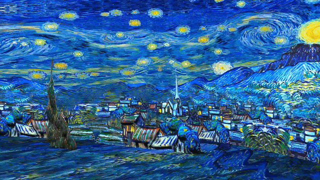
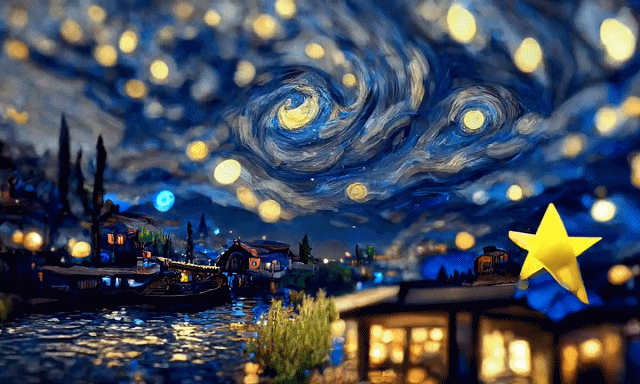
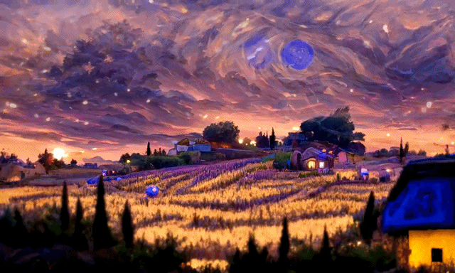
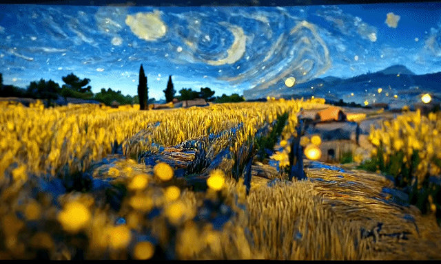
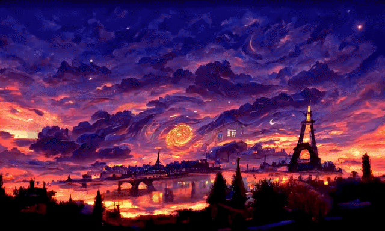
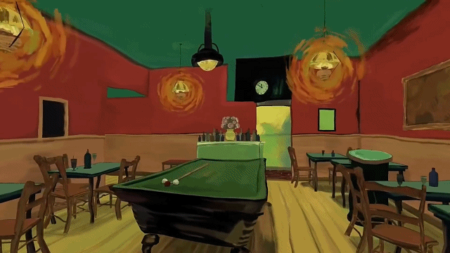
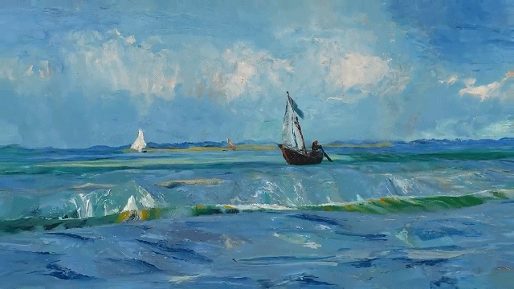

梵高大家都知道，让他没想到的事，他活着的时候，是个精神病患者。
但梵高死后，他画的每一件油画作品却是变得非常的昂贵了，成为世界上的无价之宝。
如果把他的作品加上现代的高科技手段，会是啥样的效果呢？
下图几张便是，看后你会被深深震撼到，直呼太美了。 [击掌]
#头条创作挑战赛#
但梵高死后，他画的每一件油画作品却是变得非常的昂贵了，成为世界上的无价之宝。
如果把他的作品加上现代的高科技手段，会是啥样的效果呢？
下图几张便是，看后你会被深深震撼到，直呼太美了。 [击掌]
#头条创作挑战赛#






